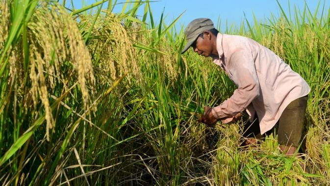
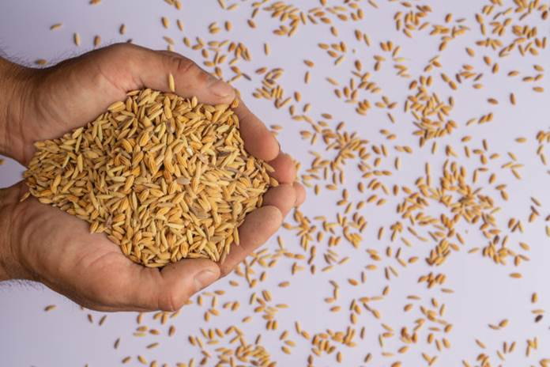
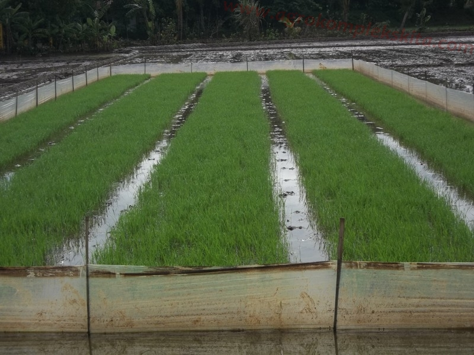
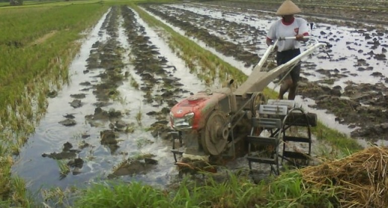
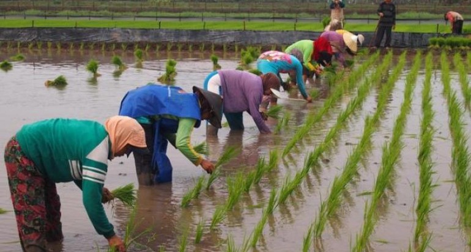
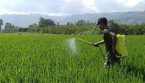
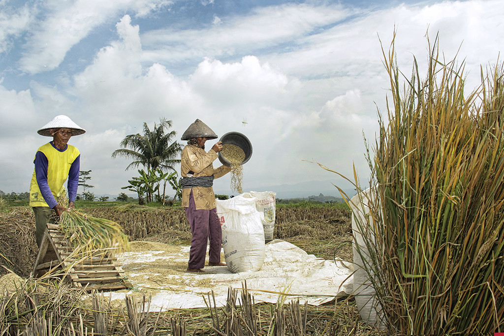

BUDIDAYA PADI

Padi merupakan jenis tanaman pangan yang mempunyai peran penting sebagai tanaman pangan
dunia. Padi sebagai
penghasil beras ini tergolong dalam jenis
tanaman rumput-rumputan (Poaceae). Semakin meningkatnya permintaan
beras membuat begitu penting peran budidaya padi, terutama di Indonesia. Indonesia
termasuk negara dengan
makanan pokok beras dan pengonsumsi beras terbesar. Amin salah satu tantangan yang muncul dalam budidaya
padi adalah menurunnya
produktivitas lahan yang disebabkan penerapan cara budidaya yang tidak memperhatikan
keadaan faktor lingkungan dan tidak bersifat berkelanjutan.
Penggunaan lahan secara terus menerus bisa menjadikan penurunan fungsi lahan dalam penyediaan berbagai unsur hara yang dibutuhkan tanaman. Terdapat berbagai cara untuk meningkatkan produktivitas lahan. Namun penerapan budidaya yang baik dan benar menjadi syarat pokok dalam meningkatkan produktivitas tanaman, terutama padi. Berikut langkah-langkah dalam berbudidaya padi yaitu :
1. Benih berkualitas
Kualitas benih merupakan kunci keberhasilan dalam budidaya padi. Benih yang berkualitas mampu beradaptasi, memiliki pertumbuhan yang cepat serta seragam, tumbuh lebih cepat, dan tinggi nilai produktivitasnya. Pemilihan benih berkualitas dapat dilakukan dengan mudah, yaitu dengan merendam benih dalam larutan garam dengan menggunakan indikator telur. Letakkan telur di dasar air dan masukkan garam hingga telur terangkat di permukaan. Selanjutnya telur diambil dan masukkan benih padi. Benih yang mengambang dibuang.
2. Persemaian
Persemaian bisa benih dilakukan 25 hari sebelum masa tanam. Tempat untuk persemaian diusahakan sama atau tidak terlalu jauh dari lahan untuk menjaga kesegaran waktu proses pemindahan. Yang paling perlu diperhatikan adalah drainase harus baik agar benih tidak kelebihan air. Lahan dibuat bedengan dan dicangkul hingga tidak ada bongkahan tanah lagi. Benih sebaiknya direndam sebelum ditanam selama 2 x 24 jam agar mampu menyerap air dengan maksimal untuk proses awal perkecambahan. Sebelum disemai lahan diberi sedikit pupuk organik untuk persediaan hara. Benih yang sudah berkecambah ditebar secara merata, tetapi jangan sampai terbenam karena bisa menyebabkan infeksi patogen pada bibit. Perdata selanjutnya adalah diberi pupuk organik kembali setelah persemaian berumur 1 minggu.
3. Pengolahan lahan
Pengolahan lahan bertujuan untuk mengubah sifat fisik tanah agar lapisan yang semula keras menjadi data dan melumpur. Hal ini akan membuat gulma mati dan membusuk menjadi humus, aerasi tanah menjadi baik, lapisan bawah tanah menjadi jenuh air yang dapat menghemat air. Dua minggu sebelum dilakukan pengolahan lahan sebaiknya diberikan bahan organik berupa pupuk kandang 2 ton/ha dan kompos jerami 5 ton/ha secara merata di atas lahan. Pengolahan lahan bisa dilakukan dengan 2 kali bajak dan 1 kali garu untuk mendapat hasil olahan yang optimal.
4. Penanaman
Terdapat berbagai macam cara penanaman padi, namun lebih disarankan dengan cara tanam jajar legowo 2 : 1 (40 x (20 x 10) cm. Cara tanam ini akan memberikan jumlah populasi yang banyak dengan produksi lebih tinggi dibanding dengan cara konvensional pada umumnya. Selain itu kelebihan cara tanam ini adalah memudahkan perawatan, mudah mengatur keluar masuk air karena ada ruang kosong, menekan serangan hama dan penyakit karena cenderung lebih terang, serta menghemat biaya pemupukan.
5.Pemeliharaan
Tahap pemeliharaan terdiri dari penyiangan, pengairan, pemupukan, dan pengendalian hama. Penyiangan adalah dengan mengendalikan gulma yang tumbuh untuk mengurangi tingkat kompetisi dengan padi. Pengairan adalah dengan memenuhi kebutuhan air padi baik dari segi kuantitas maupun kualitas, apabila kekurangan bisa dilakukan irigasi dan jika kelebihan bisa membuat drainase. Pemupukan adalah tahan pemeliharaan yang paling penting, yaitu pemberian unsur hara baik makro maupun mikro untuk memenuhi kebutuhan hara tanaman. Pemupukan harus dilakukan dengan seimbang dan yang paling penting alah disesuaikan dengan kebutuhan tanaman dan ketersediaan hara yang ada dalam tanah. Pengendalian hama dan penyakit juga penting untuk mendapat hasil yang optimal. Pengendalian harus dilakukan secara alami dan berkelanjutan sesuai dengan hama dan penyakit yang dihadapi.
6. Panen
Panen bisa dilakukan ketika bulir padi hampir keseluruhan telah menguning yang biasanya 33-36 hari setelah padi berbunga. Cara panen dapat dilakukan secara manual menggunakan sabit dengan memotong pangkal batang atau dengan mesin reaper harvester untuk menghemat waktu. Panen dilakukan serentak dalam satu lahan untuk mengurangi risiko diserang hama.
7. Pasca panen
Merupakan tahapan dalam menentukan kualitas yang akan dijadikan beras siap konsumsi. Tahap penyimpanan hasil panen juga merupakan unsur penting agar kualitas tetap terjaga, seperti menempatkan hasil panen di tempat yang tidak terlalu lembab dan segera untuk diolah.